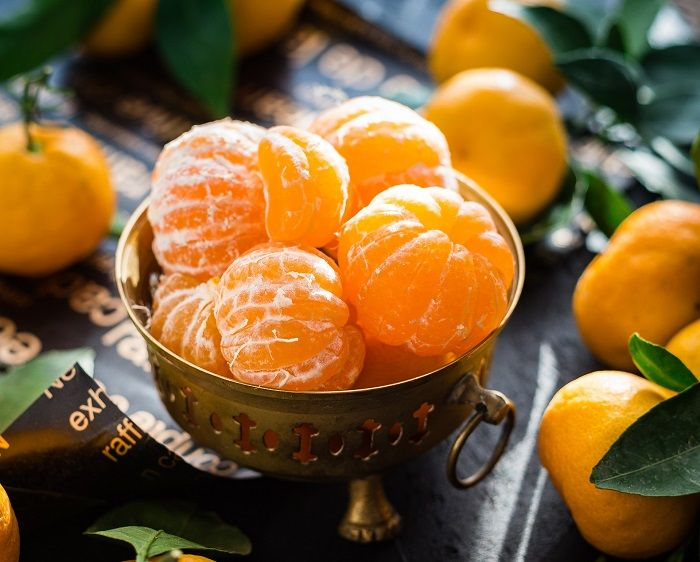

tentangbuah.com
Jeruk
Jeruk atau limau adalah semua tumbuhan berbunga anggota marga Citrus dari suku Rutaceae (suku jeruk-jerukan).
Anggotanya berbentuk pohon dengan buah yang berdaging dengan rasa masam yang segar, meskipun banyak di antara
anggotanya yang memiliki rasa manis. Rasa masam berasal dari kandungan asam sitrat yang memang menjadi
terkandung pada semua anggotanya.
Sebutan "jeruk" kadang-kadang juga disematkan pada beberapa anggota marga lain yang masih berkerabat dalam suku
yang sama, seperti kingkit. Dalam bahasa sehari-hari, penyebutan "jeruk" atau "limau" (di Sumatra dan Malaysia)
sering kali berarti "jeruk keprok" atau "jeruk manis". Di Jawa, "limau" (atau "limo") berarti "jeruk nipis".
Jeruk sangatlah beragam dan beberapa spesies dapat saling bersilangan dan menghasilkan hibrida
antarspesies ('interspecific hybrid ) yang memiliki karakter yang khas, yang berbeda dari spesies tetuanya.
Keanekaragaman ini sering kali menyulitkan klasifikasi, penamaan dan pengenalan terhadap anggota-anggotanya,
karena orang baru dapat melihat perbedaan setelah bunga atau buahnya muncul. Akibatnya tidak diketahui dengan jelas
berapa banyak jenisnya. Penelitian-penelitian terakhir menunjukkan adalah keterkaitan kuat Citrus dengan genus
Fortunella (kumkuat),Poncirus, serta Microcitrus dan Eremocitrus, sehingga ada kemungkinan dilakukan penggabungan.
Citrus sendiri memiliki dua anakmarga (subgenus), yaitu Citrus dan Papeda.
Asal jeruk adalah dari Asia Timur dan Asia Tenggara, membentuk sebuah busur yang membentang dari Jepang terus
ke selatan hingga kemudian membelok ke barat ke arah India bagian timur. Jeruk manis dan sitrun (lemon) berasal
dari Asia Timur, sedangkan jeruk bali, jeruk nipis dan jeruk purut berasal dari Asia Tenggara.
Banyak anggota jeruk yang dimanfaatkan oleh manusia sebagai bahan pangan, wewangian, maupun industri.
Buah jeruk adalah sumber vitamin C dan wewangian/parfum penting. Daunnya juga digunakan sebagai rempah-rempah.
Khasiat Jeruk
- Melancarkan Pencernaan
- Mengatur Tekanan Darah Tinggi
- Mencegah Kanker
- Mencegah Penyakit Jantung
- Meningkatkan Kekebalan Tubuh
- Memurnikan Darah
- Memperkuat Tulang
- Memperkuat Gigi
- Mencegah Penyakit Ginjal
- Membantu Mencegah Asma
Daftar Umum Harga
| Jenis Jeruk | Harga | |
|---|---|---|
| Jenis Per-Kilo | Jenis Per-Biji | |
| Jeruk Siam Bali | 15.000 | 1.500 |
| Jeruk Medan | 20.000 | 2.000 |
| Jeruk Mandarin | 36.000 | 3.000 |
| Jeruk Santang | 15.000 | 1.500 |